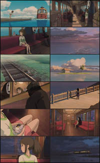
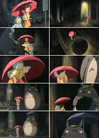

"¿Cuál es la mejor película de Miyazaki?" Por más que uno tenga por pueriles y frívolas esas preguntas, esas tablas de clasificación, puntajes y estrellitas... ahí vamos.
Primero hay que decir que no hay unanimidad entre los fans, ni sobre la mejor ni sobre la peor. En todo caso, hay cierta unanimidad en que ninguna es "la peor", pues todas son buenas. Y en cualquiera de esas votaciones frecuentes en los foros, resulta este hecho notable: cada una de las ocho películas es tenida por algunos como la mejor. Dentro de la variedad de gustos, pueden vislumbrarse dos tendencias: los que prefieren la acción y el tono épico, por un lado (Monokoke, Laputa) y los que prefieren el tono intimista-contemplativo, por el otro (Totoro, Kiki). Yo estoy más bien con los últimos; aunque la división es discutible, y no muy marcada. En general, las películas más votadas son "El viaje de Chihiro", "Mi vecino Totoro" y "Mononoke Hime".
Mi ranking de preferencias personales, al día de hoy y no sin dudas, sería:
Porco Rosso • Ponyo • Whisper of the Heart**
Kiki's Delivery • El castillo de Howl • Omohide Poro poro*
La tumba de las luciérnagas* • Mononoke • Ocean waves**
Laputa • Nausicaä • Los Yamada* • Pompoko*
The cat returns** • Cuentos de Terramar**
Incluí todas las películas producidas por Ghibli (Nausicaa incluida); también las dirigidas por Takahata (*) y por otros (**). Listado muy subjetivo, y fluctuante. Advirtamos que muchos fans disentirán violentamente;alguno tendrá por herejía poner "Kiki" adelante de Mononoke o Laputa; o "Omohide poro poro" adelante de "La tumba de las luciérnagas". Y, como ya dije, muchos juzgan a "The cat returns" con más indulgencia. Pero bueno, son mis preferencias.
Son muchas las escenas memorables. Y, por lo que puede verse, hay en esto bastante unanimidad; lo que nos gusta a casi todos —y nos gusta recordar— es más o menos lo mismo. De entre tantos momentos entrañables, la mayoría (yo incluido) coincide en destacar dos escenas de Miyazaki:
El viaje en tren, de "Chihiro"
Tres minutos, casi mudos; la música justa, en el piano contenido de Joe Hisaishi.
 Chihiro sube al tren, que corre sobre las vías cubiertas de agua; va acompañada de sus nuevos amigos, hasta hace poco más bien enemigos: un "sin-cara" -recién repuesto de su indigestión, un bebé gigante de bruja convertido en una rata gorda, y un buitre convertido en insecto.
{kind=link}
Chihiro se ve extrañanamente calma y aplomada, aunque su situación es desesperada: va a ver a una bruja terrible, y sin pasaje de vuelta, con la idea de salvar (¿cómo?) a su amigo Haku. Y mientras tanto, sus padres, convertidos en cerdos, están con el cuchillo al cuello o poco menos.
Hay una belleza exótica y abrumadora en este viaje surrealista, con pasajeros fantasmales que se van bajando en las estaciones intermedias. Montones de detalles sugestivos e inexplicados ¿Qué son y adónde van esos pasajeros? ¿De qué mundo son? ¿Qué hace esa niña en la estación, que nos mira partir?
Mientras va cayendo la noche, letreros luminosos de neón pasan tras las ventanillas del tren, ya desierto, los amigos de Chihiro se adormecen, y ella queda sola con sus pensamientos.
Somos muchos los que hemos quedado enamorados de la belleza y la melancolía punzante de esta escena.
La parada de autobus, de "Totoro"
Siete minutos, también casi sin diálogo, con un único escenario (parada de auto-bus en zona rural) y con el rumor de la lluvia como música de fondo.
 Las hermanas han ido a esperar al padre, que no ha llevado su paraguas al trabajo. La alegre excitación inicial se va apagando cuando el padre no llega en el horario esperado, y empieza a anochecer.
{kind=link}
Pasa un ciclista, los sapos croan, la luz se enciende, la llovizna sigue. La hermana menor se duerme, y la mayor debe cargar con ella, y con su propia inquietud.
Pero entonces... aparece Totoro en la parada. Al susto inicial (hasta entonces sólo la hermana menor lo había visto), sucede el reconocimiento, el préstamo del paraguas, con las indicaciones de uso... y eso es todo. Seguimos esperando, en silencio; pero, ahora, con el corazón contento. Como la niña no es una niña Disney, sino una niña Miyazaki, no se pone a parlotear con Totoro (¡ni a cantar!), simplemente disfruta el momento; y nosotros con ella.
Después Totoro descubrirá algo nuevo para él: que las gotas de lluvia hacen un ruidito estupendo al golpear contra el paraguas (los humanos ya lo sabemos, o deberíamos saberlo), y vendrá el gato-bus, y la historia continuará.
Pero por ahora nos quedamos con esa sola postal, la espera callada y gozosa bajo el paraguas: acaso la imagen más emblemática de Miyazaki, y no por nada.
Hay muchas más, que ya iremos recorriendo al comentar las películas (los impacientes puede leer también hilos como este, este o este); pero yo, mientras tanto, no quiero dejar de mencionar dos finales muy bellos de Takahata: el de "Omohide Poro Poro", y el de "La tumba de las luciérnagas".